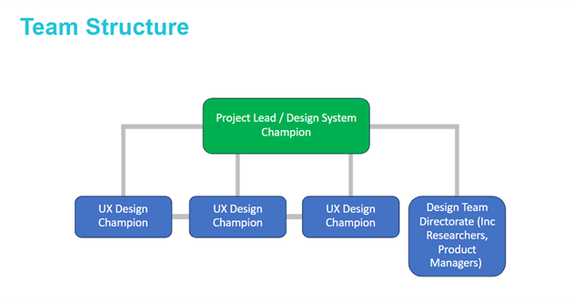
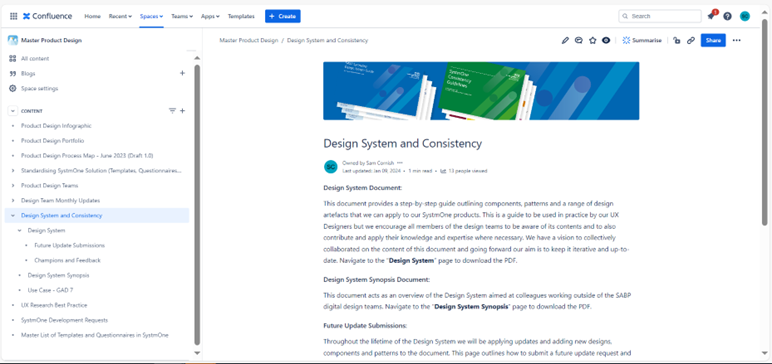
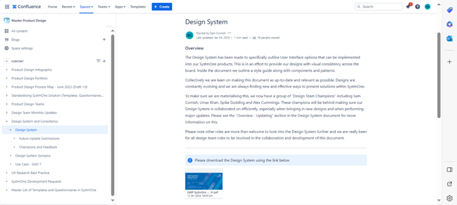
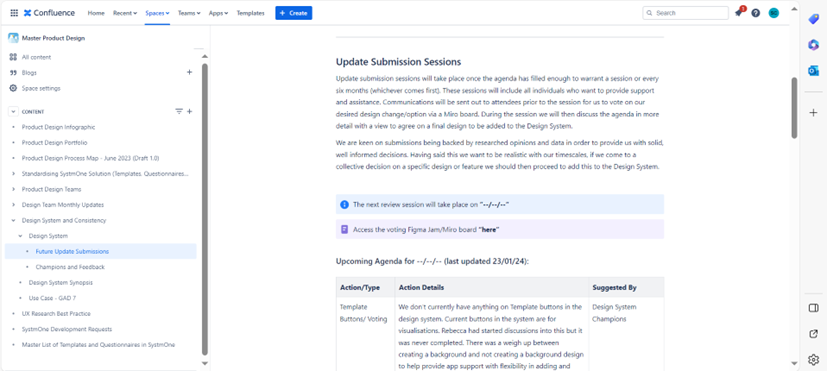
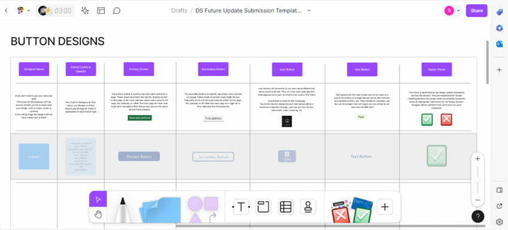
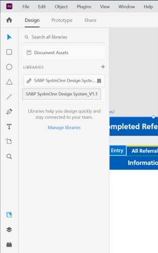
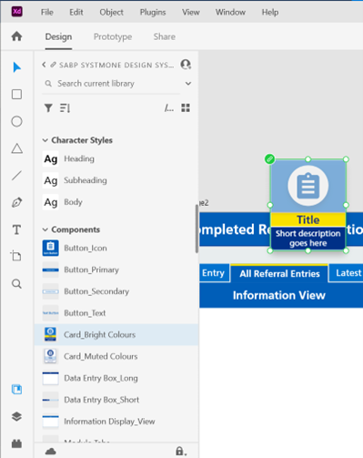

NHS Trust Design System
Project Outline Statement
Background
Surrey and Borders Partnership currently employs 5 different digital design teams that are aligned to a variety of clinical workstreams. Since the inception of the design teams, designers have been free to explore their own UI patterns and components in the products they have produced. While this helps provide designers with the space to be creative, it does reduce the consistency of UI design which then has an impact on user learning and experience. As a result, I have been tasked with assembling a new iterative and inclusive design system that will instil consistency into the clinical products the design teams produce. The primary objectives are to make sure the design system is easy to understand, is inclusive of all design team roles and increases design consistency and improves user experience/user learning.
Date & Duration:
- 4th September 2023 - Present (Development & Release)
Project Goals & Challenges
Pain Points
- Projects produced prior to the Design System varied very widely in UI output. This didn’t provide our work with a consistent identity
- Users were having to constantly relearn different symbols, icons, buttons, and their purpose. This would increase our time to teach out the products, this was an inefficient practice
Goals
- Speed up the creation of design assets and future UI project work.
- Improve the consistency of designs used across the Trust’s design teams. This is with a view to improve system learning for future projects. Stakeholders and product users will become more attuned to the designs created, learning the visuals and purpose of buttons/components, improving the speed of learning and embedding of future projects.
- Designers will be able to collaborate on creating a design system package that they can invest in themselves, combining their collective knowledge.
- Create a platform to allow for collaborative development between designers. Design decisions can then allow the design system to develop alongside industry trends.
My Role & Contribution
Shown above is the structure of the design team responsible for pulling the design system together. I decided to select specific designers for the role of Design System Champion. These individuals needed to be confident in their knowledge of the designs we use within the trust whilst also having a passion for developing consistent design and thinking of the user who will benefit from this design consistency work.
Software Used
- Miro
- Figma
- Adobe InDesign, Illustrator, XD
A range of different design software was used to help develop the design system. We needed to use Adobe InDesign to develop a document that could be iterative and easy to navigate for designers. We also used the library functions in Figma and Adobe XD in order to provide designers with a practical version of the design system. My previous experience in using this software really helped speed up the development process.
Producing a Support System
In order to help integrate the design system effectively we needed to create a support system for designers. This involves providing a central information guide in the form of a design system explanation document (pdf), a public page providing explanations of processes and asset download links and a central group of design colleagues who can support with guidance and knowledge sharing.
The design system champions were selected by myself to help support designers in their understanding of design system processes. The responsibility of a design system champion is to fully understand the content of the design system itself, this helps them become a trusted point of knowledge for their colleagues. They should then be comfortable with playing an advisory and reviewer role for other designers. Another key role for the design system champion is acting as a point of contact for the design system. Designers should be able to approach design system champions with suggestions or ideas, the design system champion will then add this to the agenda of the next update session and make sure it is discussed and addressed.
Confluence Space
The image shown below displays the Design System confluence page. This outlines the purpose of the design system to design team members. It also provides a pdf download link where users can view and easily download the latest version of the design system.
The benefits of using confluence to display the design system:
- Collective space that design team staff were already comfortable with. This almost acts as a bulletin board or public notice board.
- It's easy to access and navigate. Users are able to access all the material they require through a couple of clicks
- Assets are simple and easy to upload and download from the site
Future Update Process
The future update process was made to ensure the design system could be iterative and transform alongside the development of designs within the trust design teams. It was vital for us to make sure that the design system wouldn't be static or become outdated. Providing designers with the chance to collectively come together to discuss changes, updates or queries helps keep the development of the design system consistent.
Shown below is a screenshot of the update submission session confluence page. This page provides designers with a space where they can view the date for the next update submission session. They will also be able to download the latest FigmaJam board so they can upload their designs for a new component prior to a future session (details on the FigmaJam boards are outlined below). One key feature we wanted to include was to provide a view of the upcoming meetings agenda. This helps designers see what will be discussed, they can then prepare any questions or queries they have well in advance.
Image below displays the design submission table used by designers to submit their personal design ideas.
Above shows the Figma/Miro boards used for the Future Update Submission sessions. This provides a space where designers can submit their personal designs to meet a particular need of the design system. For example, if a new action button was identified as a new requirement for the design system, designers could then create their own design and submit this to become a potential option. These designs are then voted on by their design peers. The winning design is then approved and added to the design system. Please see below the key features of the Future Update Submission sessions:
- Details including goals of the submission session, timelines and key submission date deadlines, instructions on how to submit designs.
- Design submission table, allowing designs to post their creations within a public space, making it clear what has to be made with an ‘example’ row. Space for designers to vote on their favoured design. The design with the most votes is then applied to the design system. Design submissions are checked by the Design System Champions to make sure accessibility rules have been adhered to.
The Design System Assets
The design system assets include the Design System Guide PDF and the Adobe XD asset and component library.
Design System PDF
- The Design System Guide was a 55 page document created to outline to designers, researchers and other members of the Surrey and Borders Partnership design team what is in the design system and how to use it.
- This document was created and signed off amongst “Design System Champions” making this a collaborative document that has representation across the design teams. Design System Champions are a selection of 3 designers from across the directorate. They are responsible for having an in-depth knowledge of the design system, allowing them to be a touchpoint for other designers to contact should they have any questions or queries. Design System Champions meet regularly to discuss potential updates or subject points that need to be discussed.
- The document not only covers components, patterns their design details and how to use them but also outlines the update process, the design ethos and accessibility suggestions.
- Below you can also see the navigation element the sits on the left hand side of the Design System document. Users are able to quickly navigate to the page they require using this system. You can also see what is covered within the design system document including style guides, components, patterns, accessibility and version control.
Update Guide Page:
- Pages created to explain to designers the process for updating the design system going forward.
- Making sure this page explains the process in plain English with visual examples of the process flow.
The structure and content of component pages:
- Descriptions are provided of the component itself. This includes the size of the component in a measurement of pixels, outlining the minimum and maximum use sizes that can be used.
- Colours of the component are also displayed (eye catching/muted).
- Accessibility guidelines, in this case includes avoiding italics or underlining text and provides clear and concise descriptions on the cards.
Do & Don't Page:
- Showing designers what they should do and more importantly what they should not do
- Specific examples include avoiding using inappropriate text sizes and icons
Headings & Subheadings Page:
- This specific example displays how the headings & subheadings of pages need to be effectively structured
- The headings & subheadings example uses a simple visual guide to explain the hierarchy of page titles, helping provide examples to the more visual learners increases chances of a successful implementation of design system rules
Adobe XD Design System Library
The purpose of the Adobe XD DS Library is to help embed consistency through improving designer access to the design system assets. Following the release of the design system all designer colleagues were sent a link to access the design system. From this link they are able to view and use the assets that have been outlined within the design system guide. The decision was made to prevent the ability to edit the design system as we didn't want any accidental changes being made. Assuming some level of control over changes to the system prevents a reduction in consistency. Designers are able to provide/suggest changes through the previously mentioned 'Future Update Submission Sessions'.
Designers are able to simply drag and drop assets from the design library into their artboards. This experience is quick and easy to understand. Designers still have the ability to edit the assets taken from the design system, it just won't affect the shared assets. We felt we needed to make sure this was possible as we still wanted designers to be creative to find new improved ways of presenting information. These improvements could later be discussed and added into the design system.
 The images above display a look into the library section of Adobe XD. We can see how the design system can be accessed by designers and how the assets have been grouped and titled.
The benefits of the Adobe XD design system which has been displayed above are as follows..
- Increasing the speed of design creation: The video above shows the production of a visually completed design background in just over 1 minute. Previously, this process would take designers anywhere from 20-40 minutes to complete from scratch. This has approximately increased our design speed by 3000%. Providing designers a tool to speed up the UI creation helps save time, allowing for more important ux problems to be addressed and completed.
- Provides designers a more pleasurable designing experience
- Ensures a consistent UI look and feel is developed for every project
- Provides designers with the opportunity to produce work that will be applied to the design system and thus to a range of different projects across the trust
- Designers can access this design system library across all Adobe products including, XD, Illustrator, Photoshop. Designers can also now access this within Figma’s library function
- Speeds up sprint/task ticket completion, helping the team deliver more ROI
Outcome & Handover
- The Design System has been released and has been used with wide success, designs are now becoming more visually consistent across multiple projects
- Plans have begun to develop some research and testing of stakeholder opinion before and after the release of the design system
- The agenda for the next Future Update Submission session has received a number of varied discussion points and will be held in the next couple of months. This is really positive to see as designers are responding to the design system and applying their suggestions and design knowledge
- Over the next year the Design System Champions will act as coaches to help incentivise designers to use the designs collaboratively created. Design Systems take time to embed so the project will be reviewed in a year to see how project work has developed. Changes can then be made to the submission process/design system if needed.
- Design System Champions are meeting regularly to discuss agenda points that have been raised and any other issues that have surfaced
Collecting Feedback
Moving forward the key task we want to undertake is to gather and collate feedback on the design systems impact. The main purpose of the design system was to implement consistency, this would then help improve the experience of the user. We expect to see improvements in the time it takes for our learning and adoption team to teach out new processes using the electronic patient record. This is because users will have a better knowledge of how certain UI designs relate to specific actions. In order to gather an effective data set we want to measure the current experience of our users and compare this to the experience of the user 1 year post release of the design system. This will provide a wide spectrum of data for us to analyse.
What I learned from this project
What I learned
- I have learned how to create collaboratively and embed processes and flexibility to allow all professions across a department to have an equal opportunity to raise points and submit ideas.
- I have developed a greater understanding of the devotion and hard work needed in order to successfully embed and uphold a design system within an organisation. It's not just about the production and release, it's about making sure the designers that are using it are buying in. If there is no support for what is being done the design system can easily be cast aside and inconsistency in design will then return.
What I can do to improve
- Improve my ability to make products more collaborative. Having an awareness to involve and collaborate with others is a very important skill and I want to make sure I can continue to improve this.
- Continue to develop my ability to inspire and encourage others to share and contribute to a collective objective.